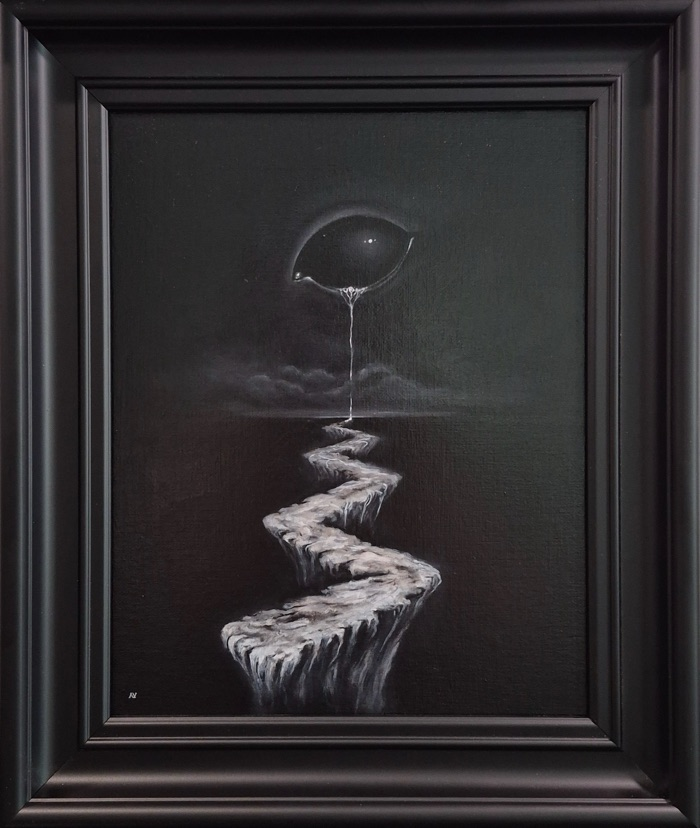
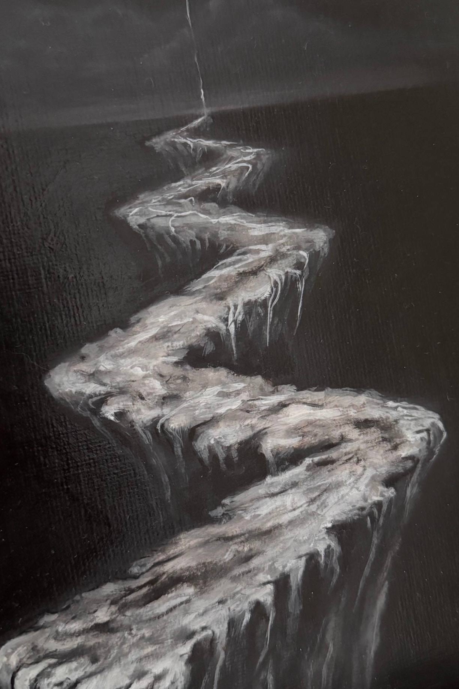

Hello, Darkness
I · 影 · Night
This painting is resting. Its record and the artist’s words remain below.The painting asks backWhat have you been walking away from, that only wanted to be greeted?
In the artist’s words
Hello, Darkness explores the encounter with one’s own shadow. Inspired by Jung’s concept of the shadow, the work is about turning towards the parts of ourselves we fear or reject, rather than escaping them. Darkness here is not evil, but something familiar that asks to be recognised and integrated.
Record
The artist’s listing ↗A reading
An eye hangs in a black sky, and a single thread of light falls from it to the horizon. Where it lands, it becomes a road. The road does not lead out of the dark; it climbs toward it, ledge by ledge, each edge breaking off into nothing. I read the thread as a tear and as a guide rope at once. The title has the sound of a greeting to an old friend, and her note says the same: darkness here is “something familiar”. You do not say hello to something you are trying to escape.

This detail is resting.